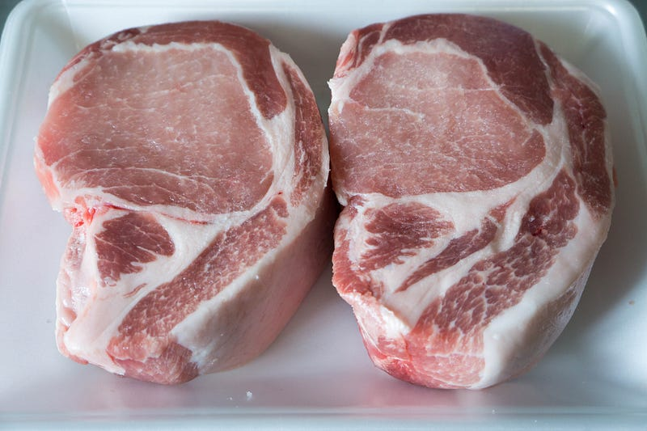
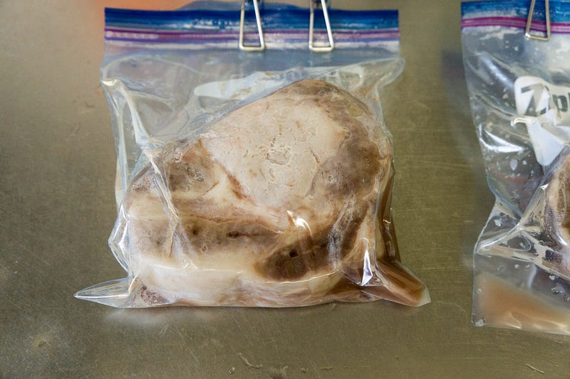
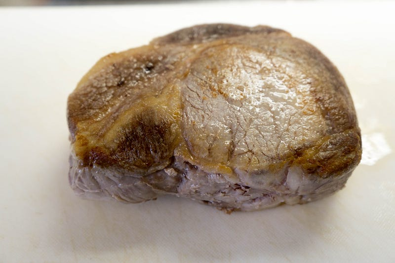
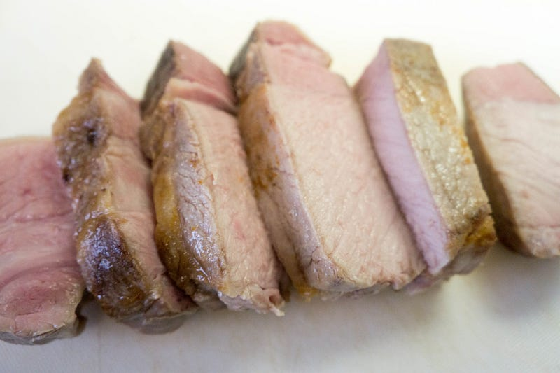
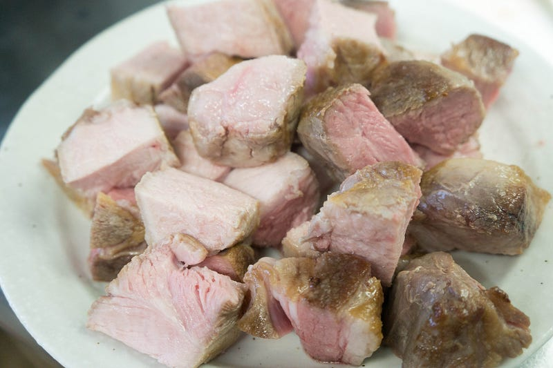

Anovaで厚切り豚ロースを調理する
Anovaで厚切り豚ロースを調理する
新生児が家にいるので、夜はねむれねぇし、他に幼児二人の面倒を見る作業もあるので全ての作業が細切れになるのだが、anovaなら３時間かけて肉を調理しても完全に放っておける。というわけでanovaで肉をやる。そしてとにかく手を抜く。
New: Anova Precision Cooker - WIFI 2nd Gen (900 Watts)
New: Anova Precision Cooker - WIFI 2nd Gen (900 Watts)が卓上IHクッキングヒーターストアでいつでもお買い得。当日お急ぎ便対象商品は、当日お届け可能です。アマゾン配送商品は、通常配送無…amzn.to
New: Anova Precision Cooker - WIFI 2nd Gen (900 Watts)が卓上IHクッキングヒーターストアでいつでもお買い得。当日お急ぎ便対象商品は、当日お届け可能です。アマゾン配送商品は、通常配送無…amzn.to
前回はこちら
今回の肉はハナマサで売ってる豚ロース厚切り。

これ、anovaでやる肉の中で最強の部類に入ると思ってる。
軽く塩して、水気を切ったらいつものジップロックへ。60℃で３時間。
はい、いつものおいしくなさそうな写真。

もう一声軽く塩をして、表面を焼く。

切る。anovaからひきあげてここまで正味１０分程度の作業。


少し小林銅蟲風味。このままでも充分うまいが、ショウガ醤油にちょいちょいとつけて食べた。
とにかくうまい。柔らかい。そしてロースなのにあっさり。子供らにはなるたけ火の通った部分を与えたが、ぱくぱくおかわりされた。
以上手抜き料理でした。このブログも正味１０分で書いた。